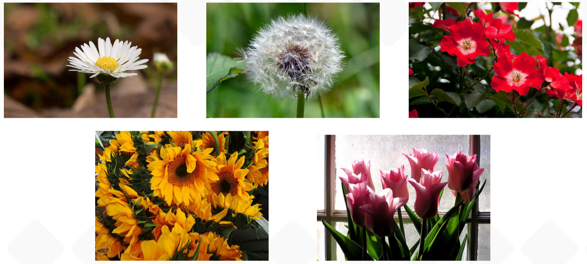
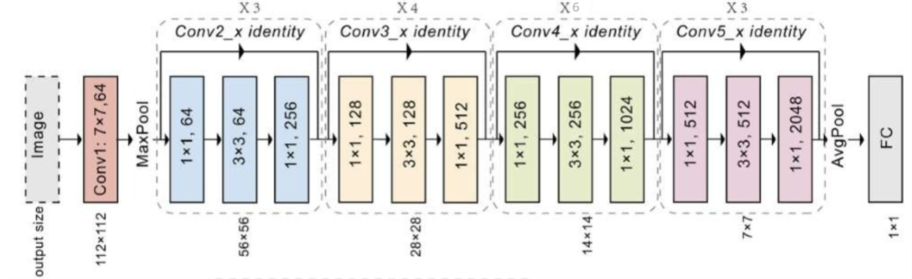

Chargement et préparation des données
- Les images de fleurs sont organisées par dossiers correspondant aux classes.
- Les images sont redimensionnées à 224x224 et normalisées pour ResNet-50.
- Les labels sont encodés en one-hot vectors pour la classification multi-classes.
Création du modèle ResNet-50
- ResNet-50 pré-entraîné sur ImageNet est utilisé avec
include_top=False.
- Une couche GlobalAveragePooling2D est ajoutée, suivie d'une couche Dense avec softmax pour le nombre de classes de fleurs.
- Le modèle est compilé avec Adam, la perte
categorical_crossentropy et la métrique accuracy.
Entraînement du modèle
- Le modèle est entraîné sur les images d'entraînement avec validation sur un sous-ensemble de test.
- La précision finale dépend du nombre de classes et de la qualité des images, souvent supérieure à 92% avec augmentation de données.
Évaluation et prédictions
- Le modèle est évalué sur les images de test, affichant la précision finale.
- Les prédictions sont visualisées pour un échantillon d’images de fleurs avec labels réels et prédits.
1. Échantillon d'images de fleurs

2. Architecture ResNet-50 (Keras)

3. Prédictions sur quelques fleurs
3. Prédictions sur quelques fleurs